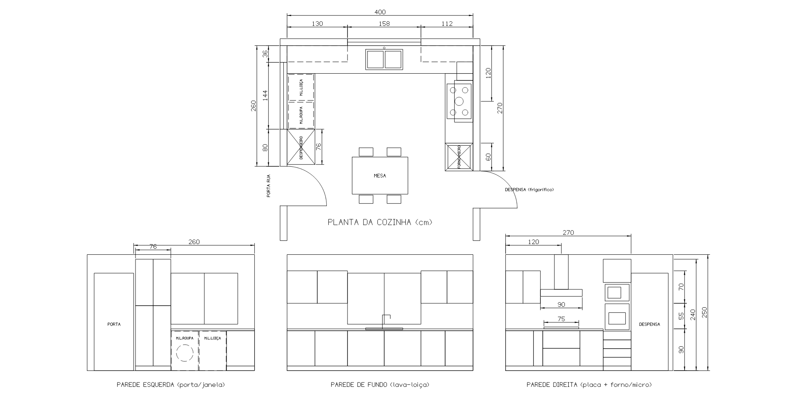

Cozinha em U com colunas altas nas duas pontas. As medidas foram tiradas no local e coincidem com o desenho do CADCraft. Os valores com estimado ainda têm de ser confirmados com fita métrica.
Arrastar para rodar · roda do rato para zoom · botão direito para mover

As posições contam-se sempre a partir do canto da parede de fundo. As zonas de canto ficam escondidas atrás do móvel da parede ao lado.
| De – a | Largura | Em baixo (até 90) | Em cima (145 – 215) |
|---|---|---|---|
| 0 – 60 | 60 | Canto, por trás das máquinas | 2 portas: 0 – 65 e 65 – 130 |
| 60 – 130 | 70 | Porta de canto, para mecanismo de canto | |
| 130 – 288 | 158 | 2 portas de 79. Lava-loiça ao centro, a 209 | Janela 100 – 210 estimado |
| 288 – 340 | 52 | Porta de canto, para mecanismo de canto | 2 portas: 288 – 344 e 344 – 400 |
| 340 – 400 | 60 | Canto, por trás do móvel da direita |
| De – a | Largura | Em baixo / altura total | Parede |
|---|---|---|---|
| 0 – 60 | 60 | Canto, bancada contínua | 36 de parede, depois janela de 144 (36 – 180) 100 – 210 estimado |
| 60 – 120 | 60 | Espaço livre para a máquina de lavar loiça | |
| 120 – 180 | 60 | Espaço livre para a máquina de lavar roupa | |
| 180 – 256 | 76 | Despenseiro do chão a 240. 2 portas de 38, divididas a 140 de altura | 80 de parede entre a janela e a porta |
| 256 – 260 | 4 | Folga para o aro da porta | |
| 260 – 345 | 85 | Porta da rua largura estimada |
| De – a | Largura | Em baixo (até 90) | Em cima |
|---|---|---|---|
| 0 – 60 | 60 | Canto, por trás do fundo | 2 portas: 0 – 37,5 e 37,5 – 75 |
| 60 – 80 | 20 | Tampo de enchimento | |
| 80 – 160 | 80 | 2 gavetas grandes. Placa a gás de 5 bicos com 75 (82,5 – 157,5), centro a 120 | Exaustor de 90 (75 – 165): campânula a 160 – 175, chaminé até ao teto |
| 160 – 210 | 50 | Porta. 60 de bancada livre ao lado da placa | Sem móvel, não há espaço |
| 210 – 270 | 60 | Coluna do chão a 240: 4 gavetas pequenas (10 – 85), forno (85 – 145), micro-ondas (150 – 188), porta em cima (190 – 240) | |
| 270 – 350 | 80 | Porta da despensa, com o frigorífico lá dentro largura estimada | |